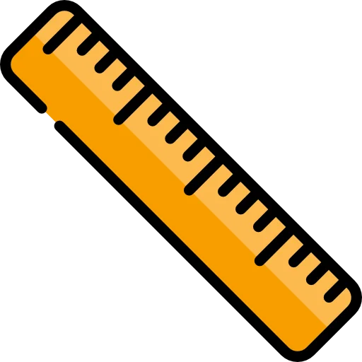
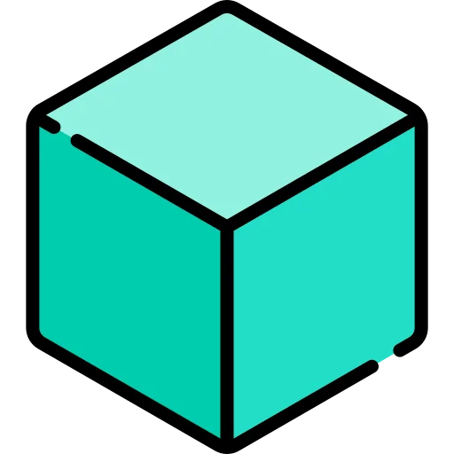
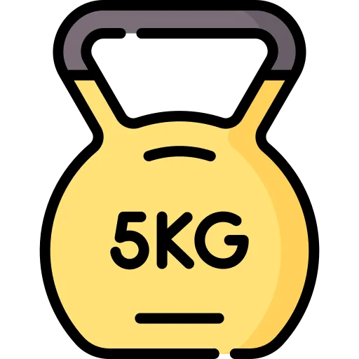
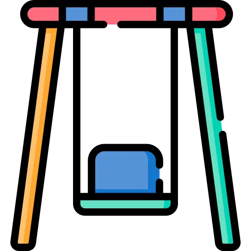

Навчальний проєкт
Одиниці виміру фізичних величин
© Максима Рябошапка
Що таке одиниці вимірювання
Одиниця вимірювання — дійсна скалярна величина, визначена та прийнята умовно, з якою можна порівняти будь-яку іншу величину того самого роду, щоб виразити відношення двох величин у вигляді числа. Значення цієї величини приймають рівним одиниці.
Система СІ
Міжнародна система одиниць (SI) — система одиниць фізичних величин, сучасний варіант метричної системи. Система одиниць SI використовується найчастіше як у повсякденному житті, так і в науці та техніці.
Які є одиниці вимірювання
-

Довжинина
Довжина може вимірюватись у таких одиницях, як: метри (м), кілометри (км), сантиметри (см), міліметри (мм) та інші. Її позначають маленькою латинською літрою "l" . У системі сі прийнятго вимірювати довжину у метрах.
-

Швидкість
Швидкість вимірююсть у різних одиницях, наприклад: кілометри на годину (км/год), метри на секунду (м/с), кілометри на хвилину (км/хв), сантиметри на секунду (см/с) й багато інших. Її позначають маленькою латинською літрою "v" . У системі сі прийнятго вимірювати швидкість у метрах за секунду.
-
Час
Час можна вимірювати у таких одиницях, як: секунда (с), годна (год), хвилина (хв), доба (д) та інші. Його позначають маленькою латинською літрою "t" . У системі сі прийнятго вимірювати час у секундах.
-

Об'єм
Об'єм вимірююсть у різних одиницях, наприклад: літр (л), кубічний метр (м³), мілілітр (мл), кібічний сантиметр (см³) й багато інших. Його позначають великою латинською літрою "V" . У системі сі прийнятго вимірювати об'єм у кубічних метрах.
-

Маса
Масу можна вимірювати у таких одиницях, як: грам (г), кілограм (кг), центнер (ц), тонна (т) та інші.Її позначають маленькою латинською літрою "m" . У системі сі прийнятго вимірювати масу у кілограмах.
-
Обертова частота
Обертову частоту вімирюють у одно секундних (обертах за секунду) (1/с). Її позначають маленькою латинською літрою "n" . У системі сі прийнятго вимірювати обертову частоту у обертах за секунду.
-

Частота коливань
Коливальну частоту вимірюють у герцах (Гц). Її позначають маленькою грецькою літрою "ν" . У системі сі прийнятго вимірювати частоту коливань у герцах.